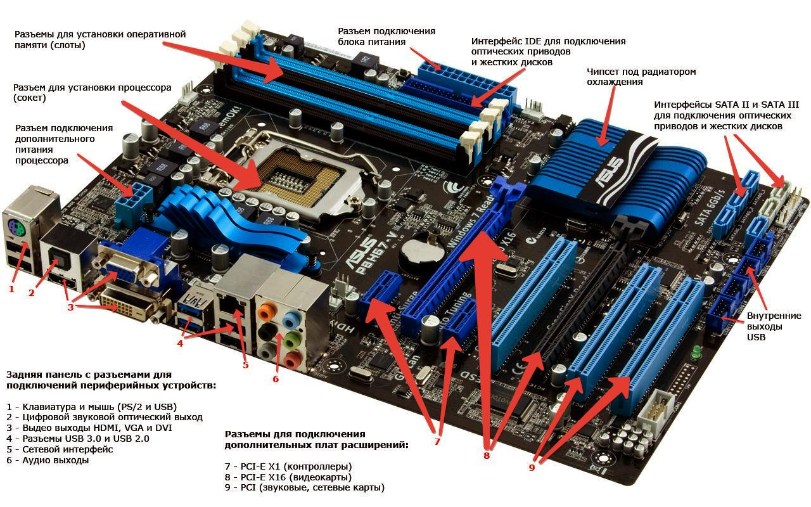
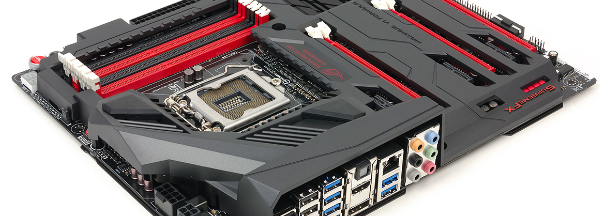
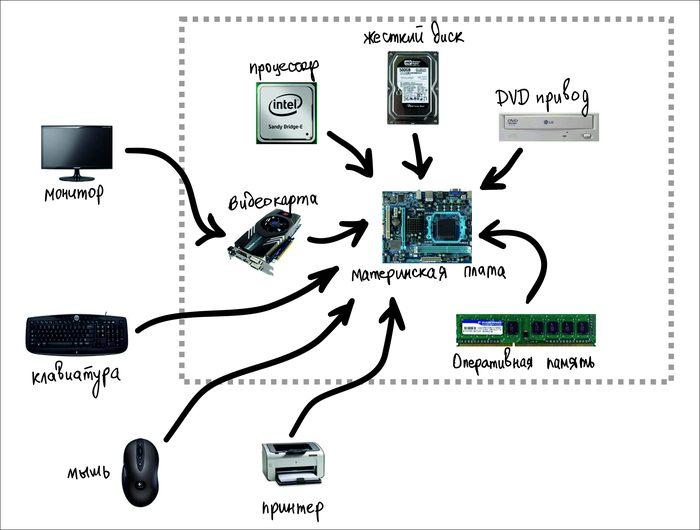
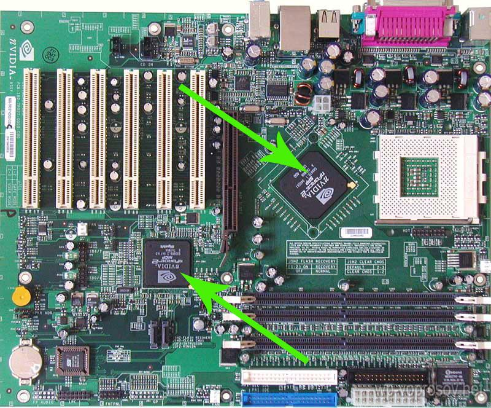
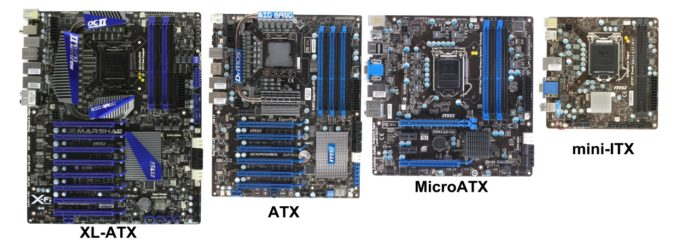

Персональный компьютер (ПК) состоит из множества узлов, передающих друг другу информацию, обрабатывающих её и обменивающихся ею с пользователем. Каждый узел выполняет свою узкоспециализированную функцию. Большинство этих узлов расположены в одном конструктивно законченном элементе – материнской плате. Постараемся разобраться, зачем нужна материнская плата.
Содержание
Что такое материнская плата в компьютере
Эта плата, также называемая системной, «материнкой» и т.д. является основой любого ПК. Её иногда называют MB – английской аббревиатурой, произошедшей от слова «motherboard», материнская плата.
Другая расшифровка аббревиатуры MB – «mainboard», главная плата. И она действительно главная, поскольку все элементы ПК подключены к ней либо непосредственно, либо через стандартные кабели.
В большинстве системных блоков плата располагается вертикально. Её прикручивают к одной из его стенок.

Понятие материнской платы ее функции
С точки зрения обычного пользователя материнская плата представляет собой прямоугольное изделие из стеклотекстолита. На ней размещаются множество деталей и разъёмов, соединённых проводящими элементами.
Основных функций у материнской платы несколько:
- передача управляющих сигналов от центрального процессора (ЦП) к различным устройствам;
- обмен данными между процессором и памятью (постоянной и оперативной);
- организация устройств долгосрочного хранения информации (жестких дисков и других внешних носителей) и обеспечение доступа к ним;
- подключение внешних устройств (видеокарт, средств обработки звука, внешней памяти, сетевых адаптеров, принтеров и т.д.);
- обеспечение ввода информации от пользователя или другого компьютера.
Важно! Отдельно следует отметить ещё одну важную функцию, не касающуюся обработки информацией напрямую, но обеспечивающую функционирование процессора и некоторых внешних устройств: обеспечение их дополнительным электропитанием.
Для чего нужна системная плата
Ответ на вопрос, что такое материнская плата компьютера, следует из описания её функций. Системная плата является тем самым связующим звеном (точнее, целым комплексом связующих звеньев), без которого работа ПК в целом будет невозможной.
Непосредственно в разъёмы на материнской плате вставляются следующие устройства:
- процессор;
- модули памяти;
- видеокарта;
- звуковая карта;
- любые другие устройства со стандартными интерфейсами материнки (сетевые адаптеры, устройства обработки видео и т.д.)
Устройства хранения информации (жёсткие диски, BlueRay и прочие) подключаются к материнке не непосредственно, а при помощи стандартных кабелей. В настоящее время для таких устройств используется интерфейс SATA. Кроме того, существуют такие же разъёмы для подключения резервных хранилищ информации, располагающихся вне системного блока.
Различные периферийные устройства (клавиатура, мышь, принтер, флешки и пр.) могут быть подключены к плате при помощи интерфейса USB. Разъёмы USB могут находиться как непосредственно на плате, так и подключены к ней при помощи кабелей.
Иногда на материнках для обеспечения совместимости с некоторыми моделями клавиатур и мышей может использоваться интерфейс PS/2, разъём которого также расположен на ней.
Платы со встроенными видеоадаптерами имеют разъём видеоадаптера, предназначенный для подключения к монитору.

Составляющие компоненты
Все компоненты, входящие в состав материнки жестко закреплены на ней при помощи пайки, клея или какого-либо другого способа соединения, а иногда и их комбинации. Теоретически для обычного пользователя материнка является неразборной.
К её главным составляющим относят:
- разъём для подключения ЦП, т.н. «сокет»;
- специальные крепёжные элементы для подключения системы охлаждения ЦП;
- несколько разъёмов для подключения оперативной памяти;
- микросхемы постоянной памяти;
- микросхемы чипсета;
- формирователи стандартных интерфейсов т.н. «шин» для работы с внешними устройствами;
- разъёмы для подключения внешних устройств к шинам (т.н. слоты расширения);
- контроллеры и разъёмы для подключения периферийных устройств;
- разъёмы для подключения основного и дополнительного электропитания;
- формирователи питающих напряжений для процессора, памяти и шин;
- простые звуковые адаптеры (на большинстве современных материнок);
- разъёмы для подключения кнопки включения и сброса ПК и индикаторов передней панели;
- другие устройства индикации и отладки (опционально);
Обычно, компоненты на плате группируются по своим функциям. Например, чипсет, модули памяти и систему электропитания располагают поближе к ЦП. Под слоты расширения отводят большую часть свободной поверхности материнки, чтобы крупногабаритные устройства (например, видеокарты) разместились там без проблем.
Разъёмы для подключения периферии располагаются по периметру материнской платы, считается, что такое расположение упрощает подключение устройств к ним.
Часть разъёмов специально располагается в отдельном месте материнской платы, на так называемой задней панели разъёмов. Под заднюю панель в любом системном блоке сделано отверстие размерами 6,25 на 1,75 дюйма с допусками 0,08 дюйма (в среднем 159 на 45 мм).
Внимание! Все стандарты на размеры материнских плат, и вообще, всех комплектующих идут в дюймах. Поэтому не стоит удивляться «некруглым» цифрам в размерах тех или иных деталей, выраженных в миллиметрах.
На задней панели обязательно есть такие разъёмы:
- PS/2 для подключения мыши и клавиатуры;
- 4-8 разъёмов интерфейса USB;
- 3-6 разъёмов mini-jack для подключения звуковых устройств;
- RJ45 для подключения локальной сети.
Перечисленный набор присутствует практически у всех плат, но иногда к нему добавляются дополнительные разъёмы.

Разъёмы электропитания
Подключать материнскую плату к источнику питания можно через стандартный 24-контактный разъём питания. Иногда к нему добавляется один или несколько 4, 8 или 12 контактных разъёмов дополнительного питания +12В.
Импульсные стабилизаторы напряжения
Блок питания выдаёт напряжение +3.3 В, а также напряжения 5 В и 12 В обеих полярностей. Их использует большинство устройств внутри ПК. Однако ЦП требует других напряжений питания – от 1 до 2 В. Связано это с оптимизацией распределения потребляемой мощности.
Для того чтобы обеспечить питание процессора, на системной плате размещают преобразователи напряжения. Они представляют собой небольшие микросхемы, расположенные в непосредственной близости от ЦП. Помимо функций преобразования напряжения, эти микросхемы обеспечивают его стабилизацию – то есть постоянство во времени, в не зависимости от степени загруженности процессора. Каждый стабилизатор является миниатюрным импульсным источником питания, для работы которого нужны конденсаторы. Эти элементы устанавливаются рядом со стабилизаторами.
Внимание! Импульсные стабилизаторы потребляют столько же мощности, сколько и процессор. Поэтому радом с ними не должно быть никаких препятствий, мешающих циркуляции воздуха, обеспечивающего их охлаждение.
Чипсет
Главная деталь любой системной платы. Именно благодаря ему ЦП может выполнять программы и обрабатывать данные. В настоящее время со всеми устройствами, кроме оперативной памяти и основных шин, процессор «общается» только через чипсет.
До 2011 года чипсет физически разделялся на две микросхемы – северный и южный мосты. Северный мост использовался для связи с быстрыми устройствами, сопоставимых по быстродействию с процессором. Южный мост – с более медленными, быстродействие которых было в десятки, а то и в тысячи раз меньше, чем быстродействие процессора.
Но впоследствии, практически все составляющие компоненты северного моста были перенесены с материнской платы в процессор, что позволило примерно на треть увеличить общее быстродействие системы. Поэтому в настоящее время чипсет используется для обмена данными с медленными шинами и другими периферийными устройствами.

BIOS и CMOS
На каждой материнской плате располагается микросхема постоянной памяти, содержащая набор процедур, обеспечивающих запуск компьютера и подготовку его к загрузке операционной системы. Набор этих процедур называется BIOS. Это также аббревиатура от английского «basic input/output system» — базовая система ввода/вывода.
Кроме этих функций BIOS позволяет проводить более тонкую настройку параметров как материнской платы, так всего ПК. С её помощью можно ускорить/замедлить процессор, выбрать способ загрузки операционной системы, поменять системное время и так далее.
Хранение этих настроек частично возложено на устройство CMOS – небольшой объём энергонезависимой памяти, питающейся от сменной батарейки. При выключении питания ПК эти настройки сохраняются и используются при следующем включении. Срок службы батарейки составляет от 3 до 10 лет.
Внимание! По окончании ресурса батарейки система выдаст соответствующее сообщение. При его появлении батарейку рекомендуется заменить.
На всех без исключения материнках предусмотрено «обнуление» CMOS. Делается это для тех случаев, когда выбранные настройки приводят к неработоспособности компьютера. Обнуление может быть сделано при помощи специальной кнопки или джампера.
Разновидности плат
Материнские платы, подходящие для одних и тех же процессоров и имеющие одинаковые чипсеты могут быть произведены в различных конструктивных вариантах исполнения. В первую очередь это касается их размеров. Существует понятие форм-фактора или типоразмера материнской платы; разберемся, что это такое.
Геометрические размеры платы имеют стандартные значения для унификации используемых системных блоков и различных периферийных устройств. Рассмотрим их подробнее:
EATX
Размер: 12 на 13 дюймов (305 на 300 мм).
Преимущественно применяется для серверного, т.н. «стоечного» исполнения. Однако, могут применяться и для ПК, в случае, если необходимо подключить несколько крупных устройств, например, видеокарт. Обладают максимальным набором периферийных устройств, однако их стоимость может на порядок превышать стоимость обычных материнок. Число больших слотов расширения, поддерживающих шину PCIE-16 – до 4.
Standard ATX
Размер: 12 на 9,6 дюймов (305 на 244 мм).
Обычные платы, использующиеся в большинстве современных ПК. Подходят для любых корпусов типа Tower. Число слотов расширения – до 3.
microATX
Размер: 9,6 на 9,6 дюймов (244 на 244 мм).
Урезанная версия ATX. Используют один слот расширения, имеют ограничение на количество портов USB. При этом они дешевле стандартных и потребляют меньше электроэнергии.
Mini-ITX
Размер: 6,7 на 6,7 дюймов (170 на 170 мм).
Специализированные платы для небольших системных блоков, преимущественно используемых для офисных решений. Слот расширения либо отсутствует, либо имеется его урезанная версия. Процессор встроен в материнку и не подлежит замене. Обладают очень низким энергопотреблением. Блок питания ограничивается мощностью в 100 Вт. Для сравнения, питание самой «лёгкой» платы microATX требует источника питания минимум 300 Вт.
Mini-STX
Размер: 5,7 на 5,5 дюймов (147 на 140 мм).
Также специализированные платы для микрокомпьютеров. Слотов расширения нет, однако, процессор может быть заменен. Видеосистема встроенная. Применяется преимущественно для офисных и мобильных решений.

Как определить, какая материка установлена
Существует три способа определения типа системной платы, установленной в ПК:
- При помощи программ диагностики. Таковыми могут быть CPU-Z, AIDA, PC Wizard и прочее.
- При помощи DMI. Этот способ, скорее, применим для программистов. Частично он реализован в «Свойствах системы» ОС Windows, но тип материнской платы там отображается не всегда.
- Визуальный. Разобрать системный блок и посмотреть надпись на плате. Традиционно, она находится между слотами расширения.
Первый способ самый простой и предпочтительный. Кроме того, он абсолютно безопасен и может применяться, когда вскрыть системный блок невозможно. Например, если ПК находится на гарантии.
Как выбрать хорошую материнскую плату
Выбор хорошей материнской платы должен производиться по следующим критериям:
- Совместимость её с имеющимся процессором.
- Возможность поддерживать всё имеющиеся в распоряжении оборудование. Это относится к типам модулей памяти, видеокарте, количеству жестких дисков и периферийных устройств.
- Форм-фактор должен совпадать с имеющимся корпусом, а энергопотребление – с блоком питания.
- Расположение элементов на материнке не должно создавать препятствия для её нормальной вентиляции. Подобным часто грешат производители дешевых комплектующих.
- По возможности на материнке должны быть две микросхемы BIOS – основная и резервная.
- Разъём питания должен быть универсальным – минимум 24+4 контакта. Обязательно наличие дополнительного питания процессора.
- Место положения разъёмов для жестких дисков должно быть удобным и не мешать платам расширения.